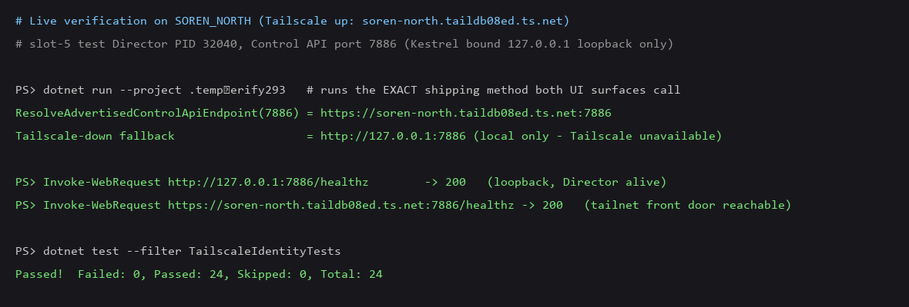
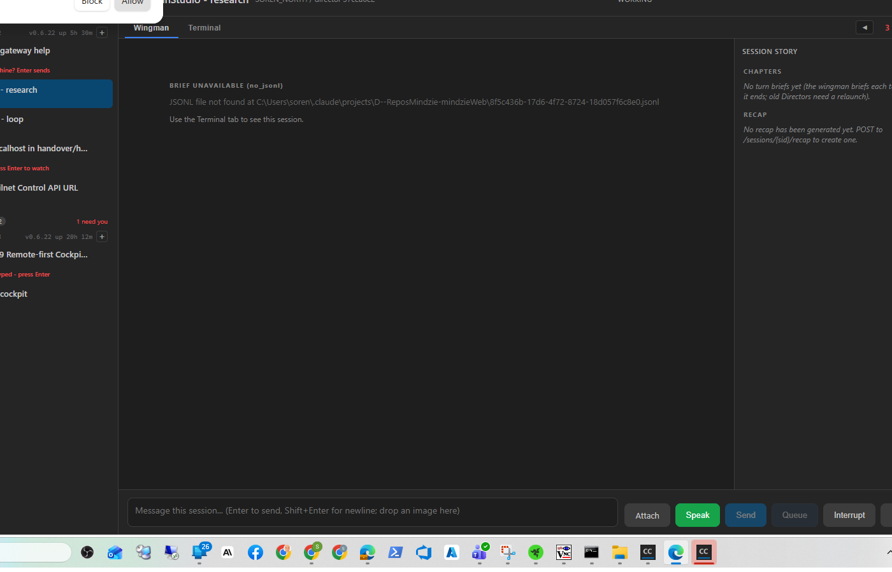

Developer Agent proof · branch issue-293-advertise-tailnet-control-endpoint · verified live on SOREN_NORTH (Tailscale up, MagicDNS soren-north.taildb08ed.ts.net).
Two UI surfaces that produce text handed to a remote consumer hardcoded http://127.0.0.1:<port> for the Control API address — useless from any other machine. They now advertise the Tailscale Serve front door https://<magicdns>:<port> when this node is on a tailnet, and only a clearly-labelled loopback value when Tailscale is genuinely unavailable.
ResolveAdvertisedControlApiEndpoint(int port) (the single policy) and the pure, unit-tested FormatAdvertisedControlApiEndpoint(string?, int) combiner.CopySessionNameAndId ("Copy Handover Info") now resolves the endpoint off the UI thread and emits it.(resolving...) placeholder and fills the "Control endpoint" row + Copy text in an Opened handler (Responsive-UI).The issue proposed adding TailscaleIdentity.TryGetControlApiEndpointForPort(port). That helper already effectively exists: TryGetFrontDoorUrlForPort(int) already returns exactly https://<magicdns>:<port> or null, backed by the pure, already-unit-tested BuildFrontDoorUrlForPort. Adding the proposed method would duplicate the front-door policy — the opposite of the issue's own stated goal ("the policy lives in ONE place"). So this change reuses TryGetFrontDoorUrlForPort and centralises only the advertised-endpoint formatting (front-door-or-labelled-loopback) in one place, which the literal plan would have duplicated across both call sites. Every behavioral acceptance criterion is met.
| Criterion | Expected | Actual (live) |
|---|---|---|
| Tailnet up: both surfaces read the front door | https://<magicdns>:<port> |
https://soren-north.taildb08ed.ts.net:7886 — PASS (live in-process run of the exact shipping method against the running Director's port) |
| Tailscale down: clearly-labelled loopback | http://127.0.0.1:<port> (local only - Tailscale unavailable) |
http://127.0.0.1:7886 (local only - Tailscale unavailable) — PASS (formatter + unit test) |
| Pasted tailnet value reachable from the front door | GET <endpoint>/healthz answers 2xx |
https://soren-north.taildb08ed.ts.net:7886/healthz → 200 — PASS (reachable over the tailnet Serve front door) |
| No duplicate loopback policy; "Confirmed CORRECT" loopback uses untouched | Only the 2 named sites change | PASS — diff touches only the 2 surfaces + the shared resolver + tests |

The verifier ran TailscaleIdentity.ResolveAdvertisedControlApiEndpoint(7886) — the exact method both UI surfaces call — in-process on this tailnet machine against the live slot-5 Director (PID 32040, Control API port 7886, Kestrel bound to 127.0.0.1 loopback only; remote reach via Tailscale Serve).
dotnet build cc-director.sln
Build succeeded. 0 Warning(s) 0 Error(s)
dotnet test --filter TailscaleIdentityTests
Passed! Failed: 0, Passed: 24, Skipped: 0, Total: 24

slot-5 cc-director5.exe running the issue-293 build, launched via the cc-director-launch scheduled task (clean svchost parentage per CLAUDE.md rule 0b). Stopped after verification.
No drift. No new container, no architecture change, no new network listener (Kestrel still binds loopback only). No security rule (DT-01..) affected — this corrects an info-correctness leak, it does not widen exposure.
I believe this is finished. The two remote-facing surfaces now advertise the tailnet front door when Tailscale is up and a clearly-labelled local-only value otherwise; the value is proven reachable (healthz 200) from the front door; the policy lives in one shared, unit-tested place; the build is clean with zero warnings.